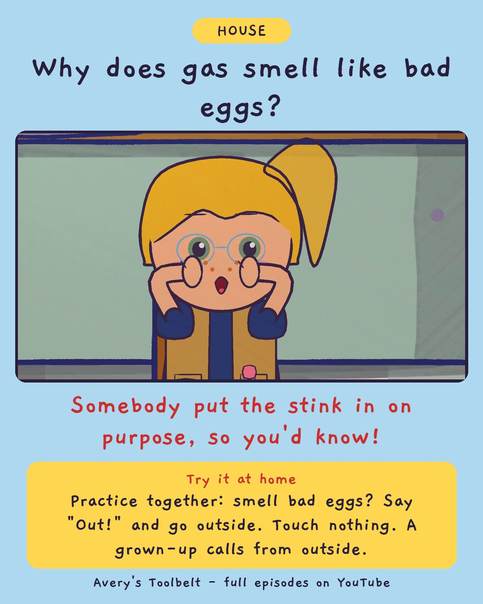

Somebody Smells GasWhat If You Smell Gas?
有人聞到瓦斯

Why does gas smell like bad eggs?
Somebody put the stink in on purpose, so you'd know!
Try it at home
Practice together: smell bad eggs? Say "Out!" and go outside. Touch nothing. A grown-up calls from outside.
Free printable coloring page (PDF) Watch the full episode on YouTubeAbout this episode, for grown-ups
Gus has seen five things this month - a wolf in the yard, a bear behind the shed, a man at the window who was a coat - and Avery has written every one of them down. So on Tuesday, when Gus says something in the kitchen smells bad, like bad eggs, Avery wants to sniff again and be sure before she says anything.
Then Mom walks in, stops, and puts the laundry basket down on the floor. Everybody outside. Nobody touches a switch, nobody picks up a phone, nobody goes back for shoes. They stand on the grass by the mailbox in their socks, and Mom calls from out there.
What children find out: the gas in the pipes has no smell at all. Somebody PUT the smell in it, on purpose, so you would know. And you never wait to be sure - you say it, and everybody goes outside.
For grown-ups: an episode where a careful kid learns that checking is not always the right instinct - and where the little brother who is wrong about everything is right about the one thing that counts.